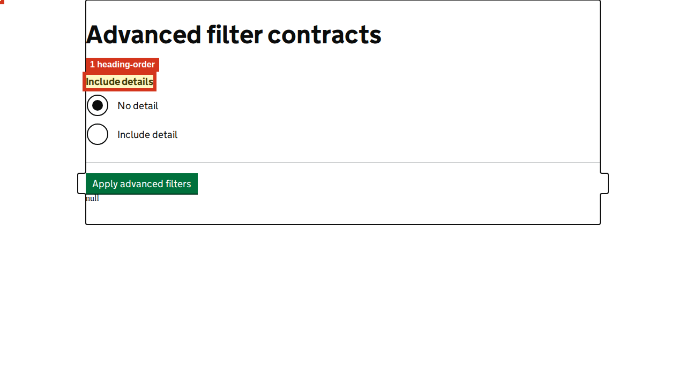

Show highlighted page image

1. heading-order
Heading level jumps from h1 to h3.
Selector: #include-label
Developer advice
Structure heuristic — context review required
Where to look
- Page
- http://localhost:4200/coverage/advanced-filter
- Selector
#include-label- Element
h3- Name hint
- Include details
- Nearby heading
- h1: Advanced filter contracts
- Landmark
- main #main-content .govuk-width-container.govuk-main-wrapper
- Why this matters
- Unexpected heading jumps can make section relationships harder to understand.
- What to fix
- Check whether the heading hierarchy represents the content. Use nested levels for subsections; do not insert empty headings just to satisfy the check.
- How to verify
- Review the complete heading outline and navigate it with a screen reader; confirm each subsection has the intended parent.
- Guidance
- W3C WAI: page headings
- Related WCAG criteria
- Related: 1.3.1 (A). A heading-level jump alone does not establish a failure. Criteria refer to WCAG 2.2; unless noted, they also existed in WCAG 2.0.
DOM hints and source investigation
search selector #include-label; search id include-label; search class govuk-heading-s; check template near h1: Advanced filter contracts
These are rendered DOM clues, not a verified source-file mapping. Match the selector and nearby text in the route component/template. The excerpt may be truncated.
{
"tag": "h3",
"id": "include-label",
"classes": "govuk-heading-s",
"accessibleName": "Include details",
"nearestHeading": "h1: Advanced filter contracts",
"nearestLandmark": "main #main-content .govuk-width-container.govuk-main-wrapper"
}Captured DOM excerpt
<h3 style="margin-bottom: 0!important;" class="govuk-heading-s" id="include-label"> Include details </h3>
2. duplicate-id
Duplicate id "detail" appears 2 times.
Selector: #detail
Developer advice
DOM defect — inspect affected references
Where to look
- Page
- http://localhost:4200/coverage/advanced-filter
- Selector
#detail- Element
div- Name hint
- Detail
- Nearby heading
- h3: Include details
- Landmark
- main #main-content .govuk-width-container.govuk-main-wrapper
- Why this matters
- Duplicate identifiers can make labels, descriptions and fragment links resolve to the wrong element.
- What to fix
- Make the id unique in the template, then update label for, aria-describedby, aria-labelledby, and error-summary links.
- How to verify
- Confirm identifiers are unique and activate each affected label/error link; inspect the resulting name and description.
- Guidance
- W3C WAI: accessibility tutorials
- Related WCAG criteria
- Inspect affected relationships against 1.3.1 (A) or 4.1.2 (A); duplicate IDs alone do not prove either failure. Criteria refer to WCAG 2.2; unless noted, they also existed in WCAG 2.0.
DOM hints and source investigation
search selector #detail; search id detail; search class govuk-form-group; check template near h3: Include details
These are rendered DOM clues, not a verified source-file mapping. Match the selector and nearby text in the route component/template. The excerpt may be truncated.
{
"tag": "div",
"id": "detail",
"classes": "govuk-form-group xui-generic-filter",
"accessibleName": "Detail",
"nearestHeading": "h3: Include details",
"nearestLandmark": "main #main-content .govuk-width-container.govuk-main-wrapper"
}Captured DOM excerpt
<div class="govuk-form-group xui-generic-filter" hidden="" id="detail"><div class="xui-generic-filter__field-title"><h3 style="margin-bottom: 0!important;" class="govuk-heading-s" id="detail-label"> Detail </h3><!--container--></div><!--container--><!--container--><!--container--><!--container--><!--container--><!--container--><div class="govuk-body"><!--container--><!--container--><!--container--><!--container--><!--container--><!--container--><!--container--><!--container--><!--container--><!-